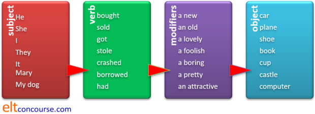
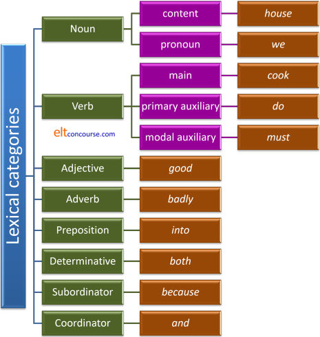
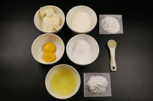
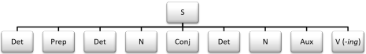
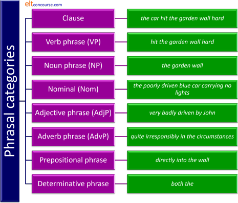
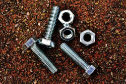
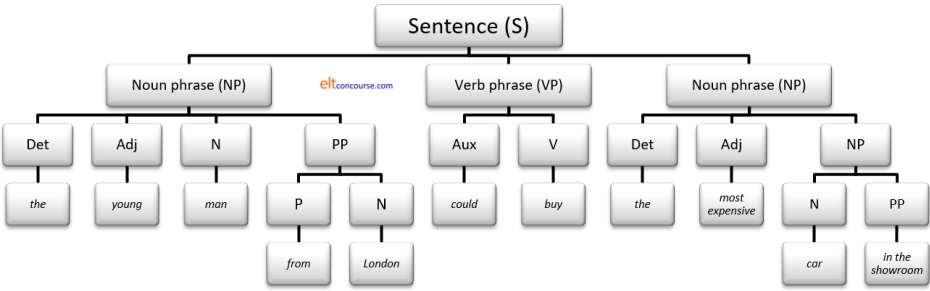
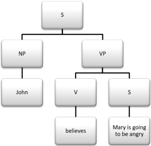
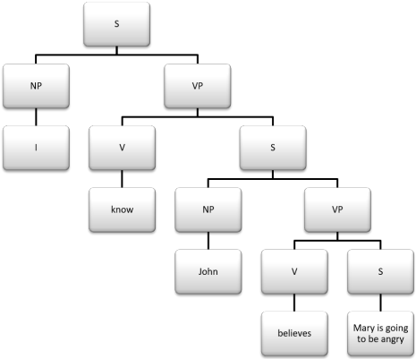

Syntax: what it is and why we need to know about it

Many of the guides on this site are to do with syntax, i.e., the
way words are combined in a language (English will be our focus) to
make well-formed phrases, clauses and sentences.
Syntax has been studied in one way or another for thousands of years
and there are active scholars today spending honourable and long
careers studying just how syntax operates. This is a short(ish)
guide to the area for English language teachers and has no ambitions
to be an original contribution to the topic.
The relationships to which the term syntax refers are syntagmatic
and, before we begin, we need to discover just what that means.
Both terms derive from the Greek syntaxis which means a
putting together or in order.
 |
An explanation of syntagmatic vs. paradigmatic relationships |
Take the sentence:
- He bought a hat.
In this sentence, hat can be replaced by almost any noun but it must be a noun or a noun phrase. Likewise, bought can be replaced by many verbs but they must be verbs or a verb phrase. So we can get, e.g.:
- He sold a hat.
- He bought a car.
- He stole a gadget.
- Syntagmatic relationship
- This describes the relationship between, e.g., He, bought
and a hat in Sentence 1, He, sold and
a hat in Sentence 2, He, bought
and a car in sentence3 and He and stole
and a gadget in Sentence 4.
These relationships work horizontally between words. Subjects use Verbs, Verbs sometimes take Objects, Adjectives modify Nouns, Adverbs modify Verbs and so on. The relationship is to do with syntax (hence the name). - Paradigmatic relationships
- These are exemplified by the changes we have made between the
sentences and describe the relationships between:
bought, sold and stole
car, gadget and hat
These relationships work vertically in the sense that Noun phrases can be replaced by other Noun phrases, Verb phrases by other Verb phrases, Adjectives by other Adjectives, Adverbs by other Adverbs and so on. The relationship is to do with word and phrase class.
It all works like this:

The words in each box have paradigmatic relationships to each
other. The red arrows show the syntagmatic relationships
and it is those with which this guide is concerned.
It is simple to see that we can combine the seven words in each
section in many thousands of ways, not all of which will make sense
but all of which will grammatically flawless.
 |
Human language and the power of syntax |
One of the defining characteristics of language rather than mere communication is that it is rule bound. All human languages combine sounds into morphemes, morphemes into words, words into phrases and phrases into clauses according to abstract and often very complex rules. To see what this means, take these five words:
- unicorn
- woman
- a
- the
- saw
There are in mathematical theory 120 ways in which these words
can be combined (expressed as 5! for the mathematicians among you) yet, in English, only four of the possibilities are
normally permitted with the remaining 116 forming combinations which
are not allowed by the rules of English syntax. (If we add one
more word, the possible combinations grow to 720, adding a seventh
results 5040 possibilities and an eighth brings the total up to
40,320 but of those only a very small proportion of combinations are
allowed by the rules of English syntax.)
If you want to try combining the 5 words into well-formed sentences for yourself do so now. Otherwise,
click
 to reveal the four possibilities.
to reveal the four possibilities.
They are:
- A unicorn saw the woman
- The unicorn saw a woman
- The woman saw a unicorn
- A woman saw the unicorn
(It is, just, possible also to have
The unicorn, saw a woman
The woman, saw a unicorn
but neither of those sentences is likely to be the topic of our
teaching and even if we allow them, that still leaves only six out
of 120 possible combinations which are permissible in English.)
So, syntax severely restricts what is possible.
However, at the same time it does exactly the opposite: using the
finite number of rules of syntax, we can create an
infinite number of acceptable, grammatical
sentences. To demonstrate the power of syntax to create as
well as restrict, consider the following possible sentences:
The old woman in the red hat saw a contented
unicorn in her garden yesterday
My contented unicorn saw an old woman in a red hat in its
garden last week
Now, it is a reasonable bet that neither of those sentences has
ever been said or written before now. Not rarely, never.
Nevertheless, the assumption here is that you will have no
difficulty understanding the sentences (even if they seem unlikely
to be true). You can do that because you are able to apply the
rules of syntax in English and extract the significance of what the
string of words means. What's more, you can do it yourself and
create an infinite number of grammatically flawless sentences using
the same syntactical rules we have used up to now. It will not
take much effort for you to produce sentences such as the ones above
which are extremely unlikely to have been written or uttered by
anyone else ever in the entire history of the human race.
All you need to do is apply the rules which we will now consider.
Discovering rules |
While we know there are rules governing a language, it is less
simple to discover and then explain what they are.
For our original four sentences above, however, we can hypothesise
what the rules might be and then test the hypotheses and refine them
if need be. The process may work something like this:
- We know that:
A unicorn saw the woman
is a well-formed sentence (because our intuition as speakers of the language tells us so) and we know that:
Unicorn a saw the woman
is not acceptable.
We also know that
The unicorn saw a woman
is acceptable but neither
Unicorn the saw a woman
nor
Unicorn the saw woman a
is acceptable.
Therefore, our hypothesis is that articles must precede nouns (1). - We can also hypothesise other rules because we know (again
from intuition) that in:
The woman saw a unicorn
it is the woman who did the seeing and in
The unicorn saw a woman
it is the unicorn which did the seeing.
We can hypothesise from this that the rule is subjects precede verbs (2). - Finally, we can hypothesise from the four acceptable sentences that the objects of the seeing come after the verbs so the rule for that is objects follow verbs (3).
Now we can test our three hypotheses with some other data to see
if they hold up. We are fine with:
A sparrow has eaten the seeds
A storm had destroyed the crops
The man owned a boat
and many thousands of other simple sentences.
So far all our hypotheses are supported by the evidence.
However, when we encounter:
*A sparrow has nested the house
*A storm had arrived the country
*The man went the boat
our intuition is that something has gone astray with hypothesis 3
because none of those is acceptable.
We have to refine hypothesis three to
objects follow transitive
verbs.
Similarly, with:
Has a sparrow eaten the seeds?
Had the storm destroyed the crops?
Did the man own a boat?
we run into a problem with hypothesis 2 because the subject is now
sandwiched between verbs and we have to refine it to:
subjects precede verbs in declarative sentences
and questions follow different syntactical rules (which we can
investigate another time).
Finally, we can try to find example in which hypothesis 1 (that
articles precede nouns) is refuted and we find:
The old man owned a fishing boat
and that single example is enough to cause us to refine hypothesis 1
to articles are the first element
in noun
phrases.
What we have done here is something like what many believe our students are doing when they encounter examples of language: forming and refining hypotheses as more data become available by a process of inductive reasoning.
Now we can take our rules and see how productive they can be. Like this:
- Take a noun phrase and precede it with a determiner and an
adjective so we can generate, e.g.:
a tall person
some old elephants
few difficult problems
and so on. - Take a transitive verb such as:
smoke
truncate
visualise
and put that next. - Take another noun phrase and precede it with a determiner
and an adjective to generate, e.g.:
the running vicar
his beautiful cat
that unpleasant rubbish
and so on.
Now take one item from each of the three sections and combine
them syntactically to make a clause and we might generate, for
example:
A tall person truncated his beautiful cat
or
Some old elephants visualised that unpleasant
rubbish
and so on.
Our troubles are not solved completely, of course, because there
are rules concerning what sorts of determiners modify what sorts of
nouns (so we can't have, e.g., several rubbish or a
problems) but these are refinements we can apply once we have
the general syntax right.
You will also have noticed that many of the possible clauses we can
produce are simply impossible or obviously untrue. That,
however, has nothing to do with grammar because it's a lexical issue
and that is one reason that we may refer not just to grammar but to
lexicogrammar when we want to investigate the syntactical rules of
English. There is a guide to lexicogrammar linked from the
syntax index on this site.
Discovering categories |
We have begged a question up to now and that is:
Just how do we
know that words and phrases belong to the categories we are dealing
with?
We have encountered three categories so far: nouns (and
noun phrases), verbs and articles (determiners of a particular
kind). We can extend that list to speak of adverbs,
adjectives, prepositions, other types of determiner, pronouns and so
on.
How we determine which item fits into which class is an essential
step to forming the rules of English syntax (and the syntax of any
other human language).
There are three ways we can do this:
Meaning |
We can start with what words mean and form our categories accordingly so we can state, for example:
- Words that refer to actions are verbs
- Words that refer to people or other entities are nouns
- Words that refer to the property of something are adjectives
- Words which refer to the frequency, time, place or manner of an action are adverbs
This will work as a definition for many words and from a set of
rules
like that it is possible to classify an alphabetic list like this:
dig, extremely, go, great, happily, house, Mary, often, potato,
read, trivial, yellow
into a classified list like this:
| Verbs: | dig, go, read |
| Nouns: | house, Mary, potato |
| Adjectives: | great, trivial, yellow |
| Adverbs: | extremely, happily, often |
Unfortunately, however, it does not help us to classify words
such as:
exist, loss, installation, openness
and thousands
more because such words do not fit the meaning (or semantic)
categories. In that list we have:
exist which is a verb that does not represent an action
loss which is a noun that cannot be used to represent an
entity
installation which is a noun that refers to an action
openness which is a noun that refers to a property of
something or someone
and the list goes on.
Form |
If meaning categories don't work, we can try categorising words by their form so we have lists such as:
- Nouns take plurals in -s or -es and can take a genitive ending in 's
- Adjectives take comparative forms in -er and -est
- Verbs take -s on the third person singular and -ed to signal a past tense
- Adverbs end in -ly and are formed from adjectives
and that will allow us to categorise, for example:
biggest, coldly, computer’s, corrected, crocodiles, cups,
enjoys, exceptionally, fairest, fortunately, goes, hoped, longer,
older, Peter's, wilfully
and then we get:
| Verbs: | corrected, enjoys, goes, hoped |
| Nouns: | computer's, crocodiles, cups, Peter's |
| Adjectives: | biggest, fairest, longer, older |
| Adverbs: | coldly, exceptionally, fortunately, wilfully |
But will not work with many words because:
- not all adjectives form comparative and superlative forms like this or at all (e.g., fascinating, absent, sunken, lost)
- some adjectives end in -ly (e.g., likely, motherly)
- some adverbs don't end in -ly (e.g., outside, often)
- lots of verbs are irregular (e.g., go, went, gone, put, put, put)
- some verbs take no -s for the third person singular (e.g., can, must, should)
- some nouns have irregular plurals or no plurals at all (e.g., information, sheep, mice)
Form is, in other words, an inconsistent way to categorise words. It is not unusable, of course, because many words we encounter can be categorised by looking at the form.
Grammatical function |
Here we are on safer ground and it is here that the concepts of
syntax and word or phrase categorisation feed off one another.
We are considering the possible distribution of
items within the syntax of a language.
The way to determine an item's function is to place it in a
syntactical environment so, for example, if we are faced with the
gaps in these sentences:
- She has lots of __________
we can only insert a noun or noun phrase into the gap such a large dogs.
We cannot, for example, insert in, happy, many, do and more. - She can __________
we can only insert a verb phrase and no other category such as dance well. We cannot, for example, insert without, sad, because, radios and more. - I saw the very __________ unicorn
we can only insert an adjective or adjective phrase such as happy. We cannot, for example, insert in front of, extremely, lots, smoke and more. - She walked __________ the road
we can only insert a preposition such as over. We cannot, for example, insert because, yellow, and, carried and more. - They have not __________ enjoyed the food
we can only insert an adverb or adverb phrase such as greatly, often. We cannot, for example, insert beforehand, delicious, some, read and more. - She came __________ I asked her nicely
we can only insert a conjunction such as because. We cannot, for example, insert in, bicycle, however, do and more. - I discovered that __________ student was late
we can only insert a determiner such as a. We cannot, for example, insert back, disconnect, although, perhaps, do and more. - When I dropped __________, the glass broke
we are constrained to insert a pronoun (and in this case, only one pronoun, it) although a noun phrase such as the thing is a possibility. As nouns and pronouns perform identical syntactic functions, however, this is not damaging to the case. We cannot insert, for example, happily, only, before, association and more.
This way of assigning words to word classes, while being the most difficult to apply, is the one that unequivocally works to categorise the lexemes of the language. It is independent of meaning and form.
Alternative categorisations |
In this guide and in most other guides on this site where word class is a relevant issue, the following categories of words and phrases are considered:
| Category | Word class | Examples |
| Open-class content words | Nouns | house, place, happiness, Mary, Botswana, paper, luggage etc. |
| Verbs | go, arrive, take, put, must, be, enjoy, like etc. | |
| Adjectives | pretty, helpful, blue, astonishing, alive, outside etc. | |
| Adverbs | happily, soon, frequently, greatly, noisily, so, very, accordingly etc. | |
| Closed-class function words | Conjunctions | and, so, because, but, although, so that etc. |
| Pronouns | he, she, it, mine, his, theirs, I, you, we etc. | |
| Prepositions | in, out, below, in front of, beside, between, underneath etc. | |
| Determiners | the, an, some, many, each, both, every, those, these etc. | |
| The grey area | Interjections | whoa, wow, gosh, damn, ouch, my my etc. |
Of these, the first four are considered open-class content word
classes to which additions are readily made and which, standing
alone, carry a signification which members of the speech community
can readily explain. These four categories also, it seems, are
common to most if not all human languages.
The second four are considered members of closed-class, functional
words
to which additions are very rarely made and which, standing alone,
defy clear definition and whose significance is only clear when they
function in the syntax of the language.
The final class falls into a grey area because, although the words carry some
kind of meaning in context, standing alone they do not and they also
do not perform a distinct grammatical function.
There are problems with any categorisation of reality because items have an annoying tendency to slide between classes. For example:
- The words this, that, these and those are
determiners in:
Take this glass
I want that pen
Try these glasses
Pass me those bags
but function very differently in:
Try this
Take that
Give him these
I want those
where they are all pronouns.
Other determiners such as one, each, all, both display the same slipperiness.
(The word that also appears as a subordinating conjunction in, e.g.:
She told me that was the case) - The word outside is given as an example of an
adjective which it is in:
This is outside furniture
but in
She went outside
it is an adverb - The word since is
a conjunction in:
Since she wasn't invited to his party, she didn't invite him to hers
a preposition in
I haven't seen her since the meeting
and an adverb in
I saw her this morning but not since.
There are plenty of other examples of this categorical indeterminacy in the guide to gradience (new tab).
A further difficulty lies in the fact that although words may fall quite neatly into major classes, the function they perform, syntactically, grammatically and communicatively may be very variable. There is no doubt, for example, that the word could should be categorised as a verb but it is one of a very different order from verbs such as cook and different again from a verb like be.
We should remember, therefore, that this is not by any means the
only way to categorise the lexemes of the language.
Traditionally, what we have categorised above as determiners, for
example, have previous been dealt with as separate categories for possessive adjectives: my, your, her etc.;
demonstrative adjectives: this, that, these, those;
quantifiers: many, a few, a good deal of, some etc.; articles: a, an, the,
Ø (sometimes including some) and so on.
Quirk and Greenbaum (1973:18) also distinguish demonstratives and
articles as separate word classes.
Other more recent categorisations, notably that of Huddleston et al (2002:22), follow something broadly similar to what is used here, although the preferred description is lexical category rather than word class, but with significant differences:
- The first four content-word categories are parallel.
- Pronouns are demoted from a separate category and subsumed as a subset of nouns (because that is how they act).
- The category of conjunctions is removed and replaced with
two distinct classes:
- Subordinators: that, for, to, whether, if etc.
- Coordinators: and, or, but, nor etc.
- A new category, determinative, is proposed to include:
the, this, that, a(n), some, all, every, each etc.
This is to separate the grammatical function of determination from the lexical category of determinative. So, for example, while the word that in:
that car
is a determinative, the same word functions differently in, e.g.:
it was that close
where it occurs as part of an adjective phrase.
Determinatives considered in this way may only occur as part of a noun phrase whereas the function of determination can be achieved in many ways.
This may seem, and is, a somewhat minor and theoretical distinction but, because word class (or lexical category) is such a fundamental aspect of any understanding of syntax, it is, in reality, quite important.
We shall persist here and in other guides with the 9-part identification of word class that is set out above but that is more from considerations of usability in the classroom and familiarity than theoretical judgements concerning the sustainability of the concepts.
In the essential guide to word class, the relationships and examples are illustrated like this. You can click on any of the green boxes to go to the essentials-only guide to that word class:

You can get it as a PDF document by clicking here.
An alternative, simpler classification might look like this:

and it would be possible to graft onto that diagram the various sub-categories of most of the classes. We have not done so here in the interests of clarity but that is set out more comprehensively in the guide to word and phrase class.
It is worth noting at this point that the classifications used in
this section refer to the English lexicon. Other languages
differ in having, for example, nominal classifiers as a discernible
closed class of words (e.g., Chinese languages, Korean, Japanese and
Thai) and in subdividing other classes (such as adjectives).
Many languages make no distinction between adjectives and adverbs
and some rely on verb modifications and have few or no prepositions
or even post-positions.
In some languages, such as Japanese, adjectives may inflect for
tense and the borderline between them and verbs is somewhat blurred.
Even the distinction between closed- and open-class items is not a
universal because, for example, in Japanese, adjectives and verbs
are members of closed classes (with new items being formed in other
ways) whereas pronouns are open class items (as they are in some
other East Asian languages).
The only truly universal word classes seem to be those of nouns and
verbs and words in other languages will be classified differently.
 |
Spelling and grammar checkers |
If you are reading this, it is a reasonable bet that you are also able to use a word processor to create texts of your own and part of your word processor package will normally be a spelling and grammar checker. How does that work?
A spelling checker will, of course, be able to detect whether a set
of characters between two spaces corresponds to any of the entries
in its dictionary and it is possible, indeed routine, for users to
add unusual or personally relevant items to that list.
For example, if we type shcool, the program can instantly
recognise that this is a misspelling and will suggest the correct
school as a replacement. That works for words which
only have a single spelling.
However, it will not be able to detect what is wrong in all these:
That child has groan quickly
We need to cheque the grammar
I tried to catch it but mist
because there is no misspelling, just a misuse of homophones (groan/grown,
cheque/check, mist/missed). If you enter that text into
most word-processing programs, nothing will alert you to the error.
Speakers of the language will, however, be able to recognise that
groan is the base form of a verb which cannot occur after
the auxiliary verb, has, in a present perfect tense form,
cheque is a British English word for a
money order and not a verb at all and mist is a noun describing thin fog.
A grammar checker uses the rules of syntax that it knows to flag up
a possible word choice error by noting that groan is both a
verb and a noun and cannot be used in that slot in the sentence as
it stands. However, mist is a noun and cannot be used
in a verb slot but Microsoft Word's built-in grammar
checker failed to spot the second two examples altogether, not
understanding that mist and cheque are nouns that cannot be used in
this kind of construction in that slot in the clause.
An example often produced by learners of an ill-formed sentence is:
*She is know about the prices
and the grammar checker correctly identified it as a possible misuse
of the verb know. However, its suggestion for a
correction is known which is also erroneous. The
program can detect a possible passive-voice clause, therefore, and
note that the verb be is followed conventional by the
participle -ed / -en form but cannot assign word or phrase
class accurately.
As yet, none of the programs is close to being able consistently and
accurately to check the syntax of English because:
- Words in a natural language may occur in more than one word
class. For example:
The tickets are free
She wants to free herself of any influence
This is the land of the free
The area is now disease-free
In the first case, the word free is an adjective, in the second a verb, in the third a noun and in the last a combining form morpheme. Any grammar checker has to include all four word classes in its dictionary to be able to decide whether the word is being used correctly. Then it has to apply all the rules of English syntax (which are not yet known, incidentally) to decide if what is written is well formed or not. - Words themselves have grammatical aspects which most
programs will also miss so for sentences such as:
The children has arrived
The furniture are interesting
no warning will be evinced even though the recognition of a plural noun vs. a singular noun should be easy enough to arrange. It is, of course, but the recognition of concord and agreement between noun and verb is much harder. If we take a sentence such as:
The friend of my mother and my father are coming to the party
vs.
The friend of my mother and my father is coming to the party
then an electronic grammar checker will be wholly at a loss to explain what's right and wrong because it is unclear to it how many people are involved. Humans can recognise it instantly.
The grail of designers of such programs is to make them
sophisticated enough to check such things and for that, they need a
complete grammar checker and a grammar checker is
just baby talk for a syntax checker.
Word class is fundamental to syntax and that is the reason that
grammar checkers are, as yet, so inconsistent and frustrating.
Often, such programs will flag perfectly correct sentences as flawed
(and applying any suggestions will usually make matters considerably
and sometimes laughably worse) and yet ignore clearly flawed
constructions altogether.
It's just hard.
 |
Using the categories |
Once we have the categories of words and phrases in place, we can start to formulate our rules of syntax more precisely and, some claim, scientifically. This means being able to construct paradigms from what we know are well formed sentences, inserting word class into the patterns we have perceived. It works a bit like this:
Given a set of correctly formed sentences such as:
The truck delivered some boxes
The old truck delivered some boxes
The truck delivered some large boxes
The old truck delivered some large boxes
That truck delivered those very large boxes
and so on, we can construct the pattern as:
S → Det (A) N V Det (A) N
in which:
S = Sentence
Det = Determiner
A = Adjective
V = Verb
N = Noun
and in which the items (in brackets) are optional elements. We
can visualise it like this:

and from that simple diagram, we can generate thousands upon
thousands of correctly formed sentences. The number is not
infinite but it approaches infinity especially if we are prepared to
construct long adjective phrases such as large, blue,
interesting, Chinese, diesel etc.
For example:
My green dog ate her yellow cat
Those large, vicious moles attacked that helpless, old man
and so on.
Furthermore, because syntax is, in theory at least, separate from
semantics, it does not matter if the sentences make any kind of
sense so:
Someone's screaming concept devoured my
unhappy car
is also derivable from the simple syntactical rule we have
established.
We can do this kind of thing to form the basis of many different
sentences so, for example, starting with
Do you always have lunch in this room?
we can arrive at:

in which we have:
S → Aux + N + (Adv) + V + (N
+ P + Det + N)
in which the adverb is an optional part and (in the case of verbs
which can be or are intransitive) so is the entire object noun
phrase. That pattern will generate:
Can you sometimes see people in the street?
Must he frequently drive buses on his holidays?
and lots more sentences, some of which may even make sense.
|  |
Constituents |
There are times, however, when generating the pattern is less
straightforward because two possible patterns (and sometimes more
than two) are possible.
For example, sentences such as:
- The neighbour of the woman and the man is complaining
- The neighbour of the woman and the man are complaining
have a single representation as:

but a glance at the two sentences tells us that the constituents
of each part are not the same.
In sentence 1. only one person is complaining and he or she is
the neighbour of the woman and the man. In sentence 2.,
two people are complaining: the neighbour of the woman and
the man. The sentences can be written to show this by
putting the constituents in square brackets, conventionally, like
this:
- [The neighbour of the woman and the man] is complaining
- [The neighbour of the woman] and [the man] are complaining
Similar things frequently happen with prepositional phrases so,
for example, in:
He photographed the house by the river
we have two possible constituent analyses:
- [He] photographed [the house by the river]
- [He] photographed [the house] [by the river]
because in sentence 1., the prepositional phrase modifies the house and tells us where it was but in sentence 2. the phrase modifies the verb photographed and tells us where the photographing happened.
Word and phrase class analysis alone is, therefore not enough for us to form rules for acceptable sentences in a language. We need to consider the phrase constituents of clauses and the elements of the phrases themselves as well.
Identifying constituents |
There are six main ways to identify the constituents of clauses
and sentences.
We will use the same example sentence to show what they are:
He photographed the house by the river
- Making a cleft

There is a guide on this site linked from the syntax index to cleft sentences so this is not the place to explain what they are, how they are formed and why they are used.
This is how they may identify the constituents of the example sentence, however:- It was the house that he photographed by the river
identifies the house and by the river as separate constituents - It was by the river that he photographed the house
identifies where the photographing occurred - It was the house by the river that he photographed
identifies the house by the river as a single constituent.
- It was the house that he photographed by the river
- Questions
When we pose questions concerning the content of a sentence, we do so by referring to the constituents so, for example:- Where did he photograph the house?
refers to the prepositional phrase as the modifier of the verb and identifies it as an independent constituent so the short answer would be
by the river - What did he photograph by the river?
assumes the house is a separate constituent so the short answer would be
the house - Which house did he photograph?
refers to the prepositional phrase modifying the house and identifies it as an independent constituent
the house by the river
- Where did he photograph the house?
- Pro-form substitution
We can use the trick of substituting a constituent with a pro-form to determine its role in the sentences, like this:- He photographed it by the river
means that the house is a stand-alone constituent - He photographed it
means the house by the river is the object - He photographed the house there
establishes by the river as the separate constituent phrase
- He photographed it by the river
- Coordination
We can use a conjunction to coordinate a phrase to another and use that test to identify the constituents of the clause. For example:- He photographed the house by the river and the boat
establishes that the house by the river is a single constituent - He photographed the house by the river and from the
bridge
establishes that by the river modifies the verb phrase and that the house is an independent constituent - He photographed and later bought the house by the
river
establishes that the house by the river is a single constituent
- He photographed the house by the river and the boat
- Making a passive
Passive-voice clauses rely on raising the object of a verb to the subject slot in the clause (and we rename it as the patient with the erstwhile subject now the agent). To identify our phrase constituents in the example sentence, therefore, we can produce either:
The house by the river was photographed
or
The house was photographed by the river
and in the first case, we know that the house by the river constitutes the patient of the clause and in the second that only the house is the patient. It also establishes by the river as a modifier of the verb, not the noun. - Mobility
We can determine what constitutes a phrase by the simple trick of seeing if we can move it and retain the sense of the original clause. Grammatically, this is what we have done above to form passive-voice clauses and cleft sentences. The simpler way is just to move an element, like this:
By the river he photographed the house
retains the sense of the prepositional phrase modifying the verb but not the sense of it modifying the noun. However,
The house by the river is what he photographed
can only mean that the prepositional phrase modifies the noun and
The house is what he photographed by the river
retains the sense of the first example here.
There is a guide to clause constituents on this site, accessible from the syntax index, linked below.
 |
Phrase structure |
Once we can define what constitutes a clause we can look a bit
more closely at what constitutes a phrase and examine the rules of
English syntax for making well-formed phrases which we can then
combine into well-formed clauses and sentences.
To decide what the constituent parts of any type of phrase are, we
need consider what is its Head.
Here is how we do that.
- Noun phrases

If we consider what we can insert in the gap in:
__________ enjoyed the play
it is immediately clear that it could be any of:
he, she, that man, my friends, people, the woman in black, all of us, the people who waited in the rain for hours on end
and so on, but the gap cannot be filled with:
happily, green, shoot, up the road, has probably benefited
and so on.
This is because a noun phrase must contain a Head noun or pronoun (and for this analysis, following Huddleston et al, we'll combine those two classes as their grammatical functions are parallel).
We can also see that a noun phrase can contain a number of optional elements. Breaking down a noun phrase is written like this:
NP → (Det*) (A*) N (PP*/S*)
in which:
NP = Noun phrase
Det = Determiner
A = Adjective
N = Noun
PP = a modifying Prepositional phrase
S = a modifying Sentence
* = may be repeated
From that we can see that only the N is obligatory so all of the following will count as noun phrases:
the man who came to the party with his sister (Det + N + S)
she (N [subset Pronoun])
the woman in the corner, by the fireplace in the red coat (Det + PP*)
the nice, shiny, new, diesel, delivery truck (Det + A* + N)
The rule we have will not generate:
the happily man, go house, many pretty etc. because they break the rules for forming noun phrases and cannot fill the gap in the sentence. - Verb phrases

By the same token, verb phrases must contain a Head verb but other elements are optional. So, to fill the gap in:
My mother __________
we could have:
wanted some cake, rang, has tried to get her money back, told me she was getting married again, arrived by car
and so on but we cannot fill the gap with:
happy, in London, the garden
and so on.
Thus a verb phrase is:
VP → V (NP) (PP*/S*)
in which only the V is obligatory. The following do not qualify as verb phrases:
very happy, the wide road, the building, under the carpet
because they do not contain the obligatory V.
We can also see, incidentally, that in order to form a correct sentence in English the VP is an obligatory element.
From that we can see that only the V is obligatory so all of the following will count as verb phrases:
left (V)
left the house (V + NP)
came to the party which was arranged by the company (V + PP+ S)
However, verb phrases do not stop there because we can also fill the gap in our example sentence with:
can play the piano, spoke too loudly, watched from the balcony
and in these cases, we can further define a verb phrase as:
VP → (Aux) V (NP)
or
VP → V (Adv/PP)
where Adv = modifying adverbial.
It is worth pausing here to consider finite and non-finite verb forms, both of which can appear in VPs. A finite verb form is marked for tense or person (even when that marking is, as is often the case in English, zero or Ø) so a finite verb phrase might be:
she works
with the s ending on the verb marking it for person or:
they work
with a Ø inflexion on the verb.
A non-finite verb phrase might be
to open the window
in which the verb is unmarked and a non-finite form.
Some verbs, including the central modal auxiliaries, have no non-finite forms, incidentally. - Adjective phrases
must contain at least one adjective as the Head but may contain other elements.
To fill the gap in:
Mary seemed __________
we can select elements such as:
tired, happy to be there, aware of the problem, happy that her son was going to university
and so on but not
the house, enjoy, in the garden
and so on.
So an adjective phrase is:
AP → A (PP/VP/S)
denoting that these are adjective phrases:
happy in herself, delighted that she could be there, pleased to help
but not
over the road, want to come
because the Head is missing. - Adverb phrases
must contain at least one adverb as the Head but may be quite complex.
To fill the gap in:
John spoke very __________
we can select:
loudly, frequently, privately, persuasively, almost endlessly, twice, again and again
and so on but we cannot select:
happy, in the garden, the house
because the syntactical rules of English forbid this.
Thus:
AdvP → (AdvP) Adv
Which willgenerate:
movingly (Adv)
lengthily at the meeting (Adv + AdvP)
and so on. In the second example, we have a prepositional phrase, of course, but, because it is adverbial in nature, we can represent it as AdvP. - Prepositional phrases
are even simpler and we can fill the gap in:
Mary arrived __________
with an adverb phrase as we saw above but also with a prepositional phrase such as:
at the hotel, before six, by car, with her mother
and so on but not with
the hotel, goes, who wanted to see her
Thus:
PP → P NP
which means that both the P and the NP are obligatory constituents.
(In some analyses, a preposition may stand alone and be designated as an intransitive preposition so, by that analysis:
She went outside
is represented as
N + V + P
but that is not the line taken here. We would analyse that as:
N + V + Adv
with outside categorised as an adverb.)
If you like, you can take two little matching tests to see if you have understood this section.
An alternative classification of phrase classes is reasonably similar to what has been discussed here and, based on Huddleston et al (2002:23), looks like this:

Elsewhere on this site, this is not the categorisation which is generally followed and, although it is stated that a verb phrase may only contains verbs, it is conceded that, for teaching purposes, the verb plus any modifiers, the object and the adverbials may be considered together as a single phrase.
There is one other category in that classification that has not
yet been explained: the nominal.
Most analyses will not see a nominal as a separate and distinct form
of phrase but doing so has some utility. Almost any phrase in
English may be nominalised and therefore act as if it was a noun
phrase in terms of syntax so, for example, in the following we have:
In the corner is the best place for that
in which the prepositional phrase is nominalised.
Only the young and fit are able to do that
in which we have a nominalised adjective phrase.
Being criticised irritated her
in which we have a nominalised non-finite verb phrase.
Enthusiastically is how they responded
in which the adverb is nominalised.
That he was allowed to go home was a sensible
decision
in which we have a nominalised subordinate clause.
They got married which pleased her mother
in which we have a nominalised finite verb phrase (including the
subject noun).
There are guides to nominalisation linked from the syntax index.
|  |
The nuts and bolts: putting it all together |
We have now reached the stage where we can recap and see how it all works in combination. So far, we have established that:
- A sentence in its minimal form consists of a noun phrase
plus a verb phrase or:
S → NP VP
and that will generate, for example:
They went home
and verb phrases, as we saw have a number of optional potential elements (see 3., below). - A noun phrase consists minimally of a noun but may have
optional elements like this:
NP → (Det*) (A*) N (PP*/S*)
and that pattern will generate, for example:
women
the woman
the young woman
the old car in the garage with the broken windscreen
his old computer I repaired last week - A verb phrase consists minimally of a verb but may have
optional elements like this:
VP → V (NP) (PP*/S*)
which might generate:
has left the keys under the mat
went to London along with his sister to see the changing of the guard
or it may appear as:
VP → (Aux) V (NP)
which could generate:
can cook dinner
had a late lunch
or
VP → V (Adv/PP)
which will generate, for example:
go frequently to the shops
lie in the sun - An adjective phrase consists minimally of an adjective but
may have optional elements like this:
AP → (Adv) A (PP/VP/S)
which could generate:
very happy in my new home
delighted you could make it
probably happy to help - An adverb phrase consists minimally of an adverb but may
have an optional extra adverb phrase like this:
AdvP → Adv (AdvP)
which could generate:
very quickly but very carefully - A prepositional phrase must consist of the preposition plus
a noun phrase, like this:
PP → P NP
and that could generate:
into the old suitcase
If we add all these elements into the structure of a complete sentence we can generate something like:
The young man from London could buy the most expensive car in the showroom
which looks complicated but is actually not because we can represent it this way:

It is also possible to break down the adjective phrase (into Adv [most] and Adj [expensive]) and the final noun phrase (into N [car], P [in], Det [the] and N [showroom]) but that is not necessary once we know how to do it.
In theory, all sentences and clauses in any language can be
generated by applying the rules for what forms a sentence and what
forms the components of its constituent phrases.
However, what we have done here applies to English syntax and it is
unlikely that other languages will work in the same way although the
assumption made by many is that all languages contain the basic
building blocks.
Now, armed with our ability to identify the functions of phrases
within clauses and sentences, we can disambiguate our previous
example:
He photographed the house by the river
without recourse to square brackets and so on to say what the
phrases are doing. It will work like this:
| Interpretation 1 [He] photographed [the house by the river] |
Interpretation 2 [He] photographed [the house] [by the river] |
 |
 |
and it is simple to see that in interpretation 1, the noun phrase includes the prepositional phrase but in interpretation 2, the verb phrase includes the prepositional phrase.
Recursion |
One of the most important features of human language which
distinguishes it from any other form of communication is
recursiveness which means we can apply the same rules for forming
acceptable syntax again and again. We saw this in the last
example in which a prepositional phrase was included within the
final noun phrase.
Now we'll consider these sentence:
- John believes Mary is going to be angry
- I know John believes Mary is going to be angry
In the first sentence we have a simple structure like this:
S → N + VP
and we have the verb phrase like this:
VP → V + S
so we can represent that as:

Sentence 2. is formed by applying the same rule recursively and looks like this:

and we can, of course go on with the process without end (the
sentence could be infinitely long) so we might have:
Some people have guessed that you think I know
John believes
Mary is going to be angry
but we won't.
We can also break down the final S at the bottom right of the tree
into:

and that could be appended to our diagram quite easily but exactly
how one analyses the verb phrase is open to some debate. Some
recognise be going to as a constituent auxiliary verb
phrase and some would append the to to the verb be.
For teaching purposes, it matters little which approach you take,
providing you are consistent.
 |
In the classroom |
The second part of the title of this guide is
and why we need to know about it.
Here's why:
- Guesswork
- We can, of course, try to teach the rules of English syntax
purely inductively and hope that our learners are alert enough
to be able to figure out three things for each type of phrase they
encounter:
- What the obligatory Head is for each phrase type
- What the optional constituents are and whether they can be repeated
- What elements are forbidden by the rules of English syntax for each phrase type
We can help a little with the process by making sure that the phrases we present together contain the same elements in the same order so that it makes some kind of pattern sense and we can start with the easiest elements before adding in longer and more complex ones.
This means, for example, presenting phrases like this:- NP: present as
- N
such as in:
She came home
Mary arrived
etc. before - Det N
such as in:
The weather is terrible
A man arrived
etc. before - Det Adj N
such as in:
That old Ford car is cheap
Those beautiful, fresh flowers are for her
etc. before - Det Adj N PP
such as in:
The wonderful pictures on the walls in the gallery are very valuable
Some interesting ideas from the meeting about the new road were suggested
etc.
- N
- VP: present as:
- VP → V NP
such as in:
She read a book
We enjoyed the meal
etc. or
VP → V Adv
such as in:
I walked slowly
Please smoke outside
etc. or
VP → V PP
such as in:
She sat in the corner
She went to school
etc. before - VP → Aux V NP
such as in:
Mary has finished her breakfast
We can answer the questions
etc. before - VP → V NP PP
such as in:
I have put the old chairs in the corner
Mary must arrive before six o'clock
etc. before - VP → V NP S
such as in:
I'll buy the book John recommended to me
Angela printed out the instructions we have followed to get here
etc.
- VP → V NP
- Presentation
- It makes sense when the focus in a lesson is on acceptable
syntactic structures, to focus any presentation on just one or
two so that the learners are able to notice the patterns or,
indeed, have them pointed out.
For example, if noun phrases are presented with and without adjectives or modifying prepositional phrases, with and without suitable determiners and so on in the same lesson, it will not be surprising if our learners fail to notice any of the patterns we have analysed in this guide.
Equally, if verb phrase patterns are mixed to include those with and without adverb phrases, using transitive and intransitive verbs randomly (so with and without NP constituents) and some with prepositional phrase modifiers and others without, then the learners will not have the data from which to realise which patterns are acceptable and which forbidden.
Adjective phrases, too, despite being usually quite simple can contain large quantities of text functioning as a prepositional phrase, a verb phrase or a whole sentence.
These are wasted opportunities which could easily lead to errors such as:
*She is know about the prices
rather than the intended:
She is sure about the prices
because the learner has not been led to understand how adjective phrases function in English. - Unpacking complexity
- A great strength of some syntactical analysis in classrooms
is that it can empower learners armed with a little knowledge to
unpack seemingly complex and otherwise impenetrable sentences
because they are alert to the fundamental constituents of
clauses and can strip out the optional elements to leave the
core.
We can, for example, take something like:The storm that swept in last night from the sea almost completely destroyed the villagers' fragile and unprotected fishing boats
and bring some phrase analysis to bear on it, stripping out the optional constituents of the two noun phrases and the verb phrase so we are left with:The storm destroyed the boats
which is all that is required for adequate comprehension in most circumstances.
The ability to recognise clause elements and then to recognise the next level down of phrase elements is a skill well worth encouraging and nurturing in your learners because it can make them independent readers and listeners more quickly than any amount of skills work practice. - Correction
- When correcting spoken or written work, it pays dividends on
many occasions to be alert to ill-formed or incomplete phrase
constituents so, for example, errors such as:
*He proud to be here
*That in the corner was broken
*My mother in the garden
*In the house is decorated
and so on are all easily correctable, of course, but they will recur unless the learners can be brought to the understanding (by telling, by elicitation or by exemplification) that certain types of phrases require certain elements in English. In these cases, the focus needs to be on the syntactical constituents of adjective phrases, noun phrases, verb phrases and noun phrases (again) respectively.
|
|
More on syntax |
It is usual for guides on this site to end with a table of links to related guides. That's not happening here because syntax is related to just about everything to do with grammar and language analysis so, for more in the area, go to the in-service syntax index and select where you want to go from there.
References:
Huddleston, R and Pullum, GK et al, 2002, The Cambridge
Grammar of the English Language, Cambridge: Cambridge University Press
Quirk, R and Greenbaum, S, 1973, A University Grammar of English,
Harlow: Longman